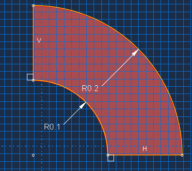
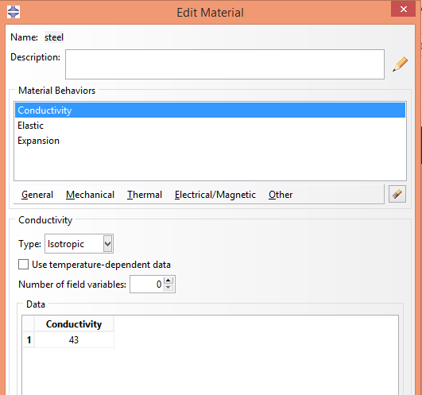
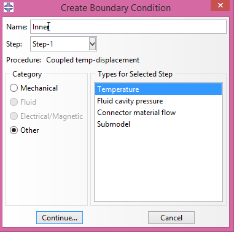
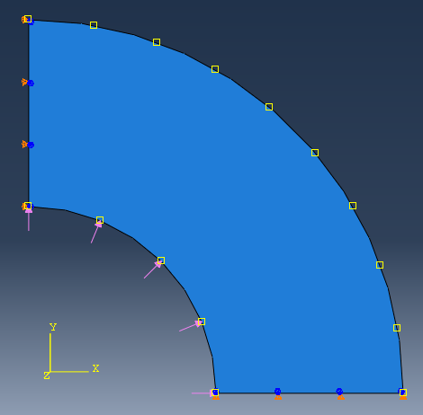
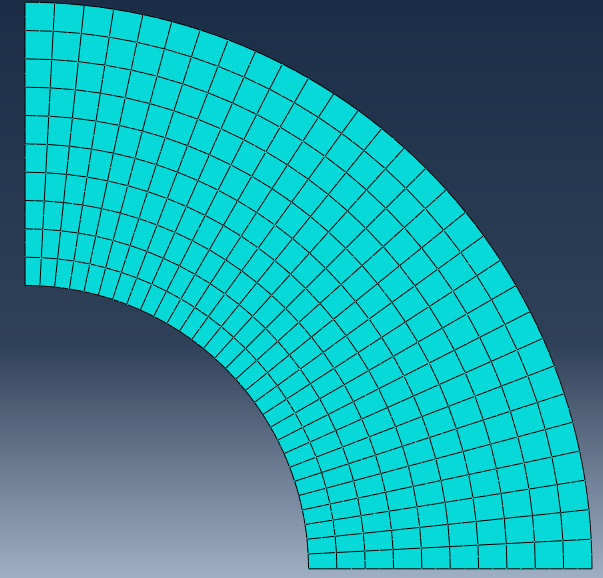
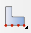
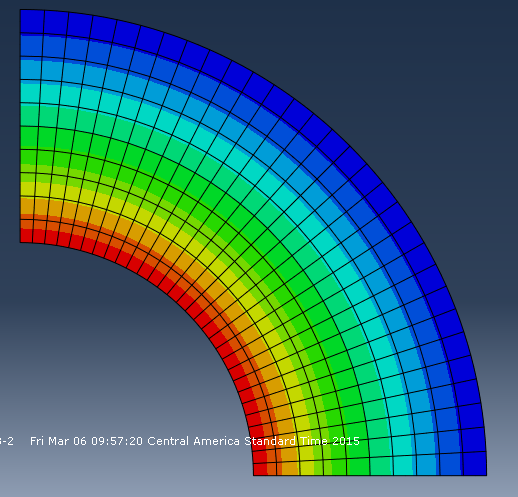

Contents
|
Exercise 4.1: Thermal Gradient & Pressure on a Spherical Tank
We will now calculate factors involved with a spherical steel tank under the effect of both a thermal gradient and pressure due to a contained fluid.
Data files are available.
|
|
Modeling

- Create a
2D deformable Shell part, named Tank. The approximate size should be 0.5. Use the Create Arc and Connected line tools to create a quarter of Spherical Tank. Use Add Dimension to set the inner radius to be 1.E-1; outer radius to be 2.E-1.

- Create a material named
Steel.
- Define the
Elastic property with \(E=\) 210.E9 and \(\nu=\) 0.3.
- We need to define more properties for the coupled problem. Open the Edit Material dialog box.
- In
Mechanical→Expansion, define thermal expansion coefficient to be 1.2E-5.
- In
Thermal→Conductivity, define the thermal conductivity to be 43.
- Create the section of this material named
SteelSection and assign it to the Tank part.
|
|
Predefined Conditions
-  First instance the
Tank part and create a new step named CouTemp of type is General Coupled temp-displacement.
- In the Edit Step dialog box, choose
Response type Steady-state and toggle on Nlgeom.
Since it is a quarter of the tank, we define symmetry boundary condition at the left and bottom. From Initial Step, at the left boundary fix U1 and UR3; at the bottom boundary fix U2 and UR3. - In the step
CouTemp, we create a temperature boundary along the inner surface of tank. Choose Create Boundary Condition.
- In this dialog box, select Category
Other and Types Temperature, naming it InnerTemp with Magnitude 100.
- Similarly, define an outer surface temperature of
30.
 The contained fluid also exerts pressure on the inner surface of the tank. Define an InnerPressure of 30E5 along the inner surface.
|
|
Meshing

- Use the Seed edges  tool to seed the inner and outer edge with
30 elements.
- Seed the left and bottom edge with
10 elements.
- For the elements, choose the
Standard element library in the Coupled Temperature-Displacement family with a Quadratic order Reduced integration (CPE8RT) method. Use Quad/Structured to mesh the part.
|
|
Job & Postprocessing

- Create a job, save it, and run it.
- Observe the resulting temperature distribution and stress distribution with Field Output.
|
Reference
This tutorial is based on an example by Lam Phung.
Credits
Neal Davis, Ruizhi Li, and Binyue Hou developed these materials for Computational Science and Engineering at the University of Illinois at Urbana–Champaign.
 This content is available under a Creative Commons Attribution-NonCommercial 4.0 Unported License. This content is available under a Creative Commons Attribution-NonCommercial 4.0 Unported License.

|